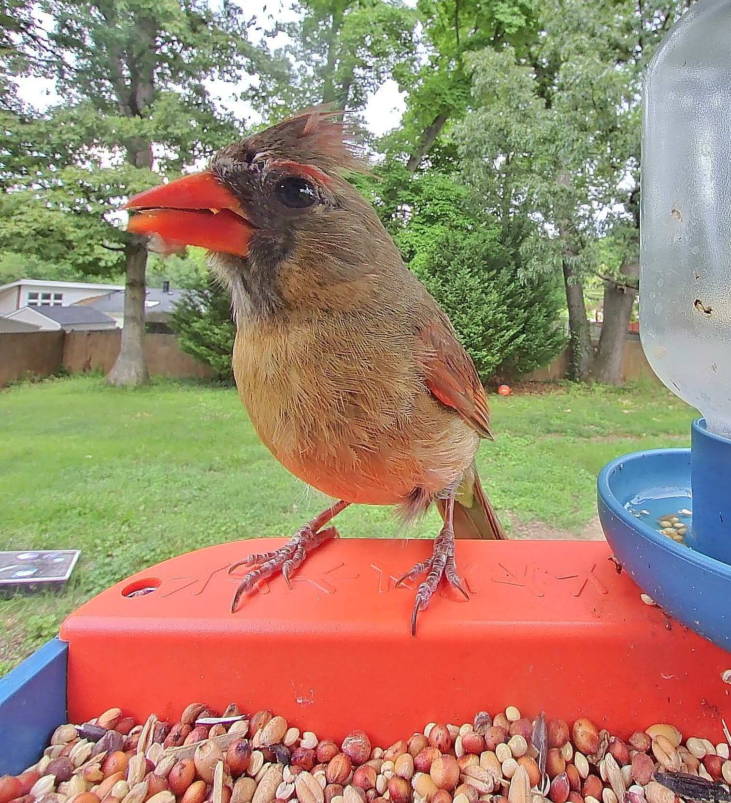
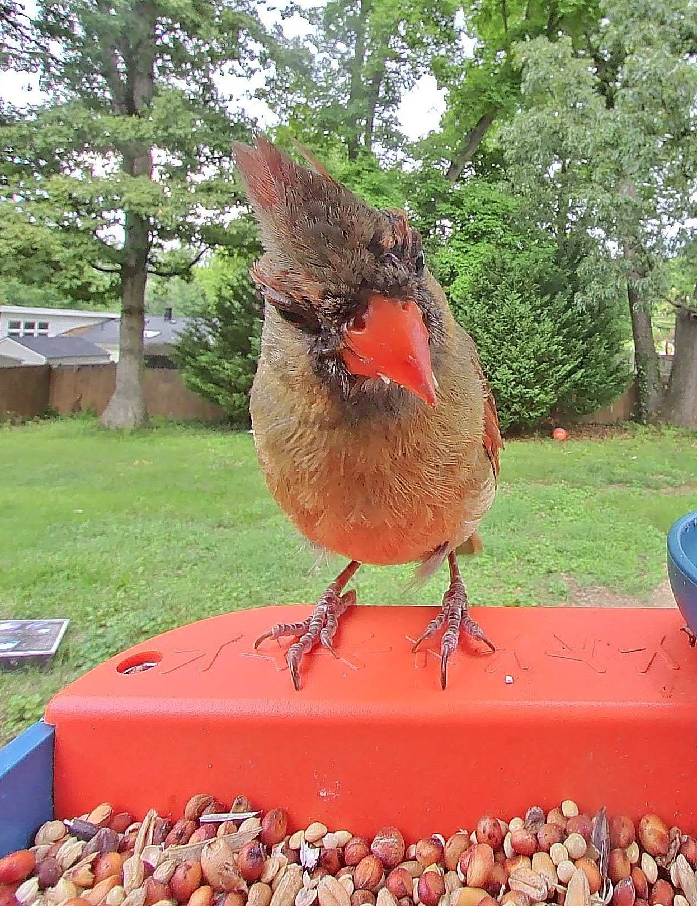

The Cardinal is a recent addition to the community and keeps largely to himself. This author wonders if he may already have a partner in secret, as The Cardinal tends to grab large amounts of seeds in a single visit before disappearing into one particular treetop. Perhaps it was a poor match, or perhaps she is already brooding... time may tell. While we wait for The Cardinal to reveal his secrets, we can at least admire his mohawk and strikingly orange beak.
